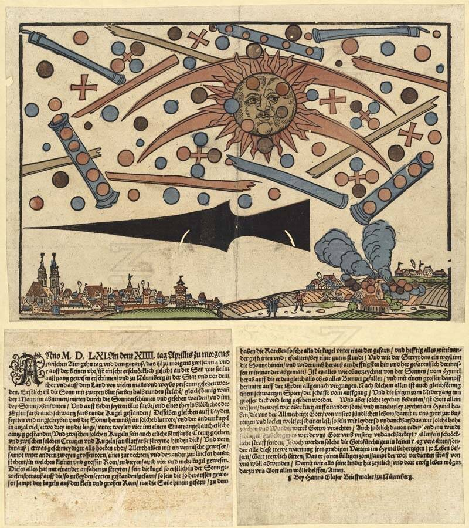

Nuremberg sky battle
Nuremberg, Germany, 1561

According to a broadsheet by Hans Glaser, at dawn on April 14, 1561, "many men and women" of Nuremberg saw an aerial battle "out of the sun": spheres, crosses, cylinders and a large black spear-like shape that seemed to fight before falling to earth in smoke. The woodcut became widely known after Carl Jung reproduced it in 1958, and ufologists cite it as an early UFO battle. Skeptics say it was most likely an atmospheric event such as a sun dog, and Jacques Vallée suggested such broadsheets were a "stock myth" used for religious warning. 1
Open in the interactive Watcher
Sources
- 1561 celestial phenomenon over Nuremberg Wikipedia